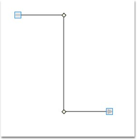

Vertex template for intermediate points can be set using ConnectorAdornerVertexStyle property of line connector. Custom styles can be set. The following code snippet illustrates the same.
Table 32: Property Table
|
Property |
Description |
Type of the property |
Value it accepts |
Any other dependencies/ sub properties associated |
|
VertexStyle |
Gets or sets the vertex style. |
Dependency property |
Style |
No |
|
[XAML]
<Window.Resources> <ResourceDictionary> <Style x:Key="vertexStyle" TargetType="{x:Type Thumb}"> <Setter Property="Width" Value="7"/> <Setter Property="Height" Value="7"/> <Setter Property="SnapsToDevicePixels" Value="true"/> <Setter Property="RenderTransform"> <Setter.Value> <TranslateTransform X="-3" Y="-3"/> </Setter.Value> </Setter> <Setter Property="Template"> <Setter.Value> <ControlTemplate TargetType="{x:Type Thumb}"> <Rectangle RenderTransformOrigin="0.5,0.5" Fill="Beige" Stroke="Black" StrokeThickness="1" RadiusX="0" RadiusY="0"> <Rectangle.RenderTransform> <RotateTransform Angle="45"/> </Rectangle.RenderTransform> </Rectangle> </ControlTemplate> </Setter.Value> </Setter> </Style> </ResourceDictionary> </Window.Resources> |
|
[C#]
LineConnector lc = new LineConnector(); lc.ConnectorType = ConnectorType.Straight; lc.StartPointPosition = new Point(100, 100); lc.EndPointPosition = new Point(300, 300); lc.IntermediatePoints.Add(new Point(200, 100)); lc.IntermediatePoints.Add(new Point(200, 300)); lc.VertexStyle = this.Resources["vertexStyle"] as Style; |
|
[VB]
Dim lc As New LineConnector() lc.ConnectorType = ConnectorType.Straight lc.StartPointPosition = New Point(100, 100) lc.EndPointPosition = New Point(300, 300) lc.IntermediatePoints.Add(New Point(200, 100)) lc.IntermediatePoints.Add(New Point(200, 300)) lc.VertexStyle = TryCast(Me.Resources("vertexStyle"), Style) |

Figure 66: Vertex Style